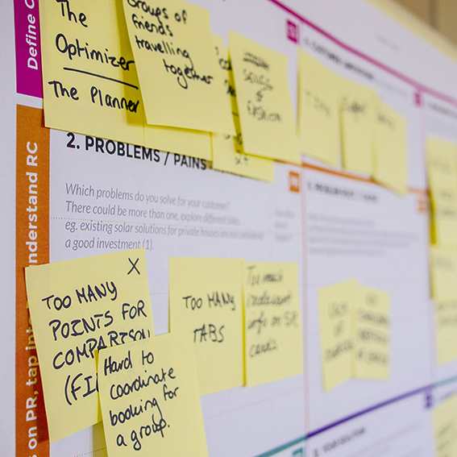

その作業、まだ
Excelで管理していませんか？
現場に合ったシステムで、
無理なく改善を
サービスの紹介
私たちのサービスは、みなさまの「働きやすさ」を支えています。
システム開発
貴社のニーズに応える*DXシステムをご提供いたします。
コンサルティング
課題解決のご提案とシステムの運用をサポートいたします。
*DX（デジタルトランスフォーメーション）とは、デジタル技術を活用して業務や組織を変革し、売上や顧客体験の向上を実現することを指します。
システムの紹介
作業時間が大幅に節約でき、簡単に操作できるシステムの一例をご提案・制作いたします。

業務改善システム
プロジェクトの進行状況が社内で一覧でき、遅れが生じている場合は、原因を分析し、改善策を提案します。
出版社様や大規模なプロジェクトを抱える制作会社様など、複数の進行管理が必要な現場でご利用いただいています。
在庫管理システム
在庫状況をリアルタイムで可視化し、入出庫や発注状況を一元管理します。業務の効率化とロス削減を実現します。
製造業様、小売業様など、在庫管理の精度が求められる企業様に多くご利用いただいています。
属人化防止システム
個人で抱えがちな業務や顧客対応を社内で共有し、担当者が不在でも業務が滞らない仕組みを構築します。
一人で顧客を担当する業務でも、チームで支え合える体制を実現。有休消化率の向上に貢献した実績があります。
お客様の声
さまざまな企業様から、システム導入後の成果や改善効果についてお声をいただいています。
○○出版様
進行の見える化で刊行遅延を改善
これまでの進行管理は編集者しか把握できず、管理者側で原因を分析できなかったため、刊行スケジュールに遅れが生じても改善する術がありませんでした。 業務改善システム導入後は進行状況を一目で確認できるようになり、遅れにも早い段階で対応できるようになりました。また、データベースの活用により、一人ひとりに適したスケジュールの作成も可能となり、年間の刊行点数が予定通り発売できるようになりました。
○○株式会社様
担当者不在でも業務が回る体制へ
これまで業務や顧客対応は担当者ごとに管理されており、引き継ぎが難しく、自由に有給が取れないという問題に悩まされていました。 属人化防止システムを導入したところ、誰が何をしているのかチームで共有できるようになり、担当者が不在でも業務が回るようになりました。情報共有もスムーズになり、業務全体の見通しが立てやすくなりました。その結果、有休取得率や長期休暇・育休の取得向上につながりました。